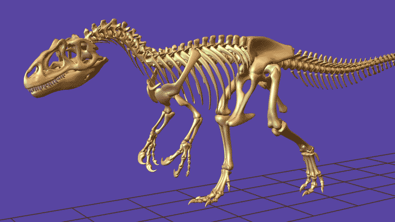

Welcome to a space dedicated to the exploration of Earth's past and its inhabitants.
Here you will find my work in Paleontology and Geology, encompassing field-based research, fossil record analysis, stratigraphic investigations, and broader geological studies.
The website also presents my original natural history illustrations, designed to support and visually synthesize paleoenvironmental reconstructions.
Through the integration of scientific research and visual representation, this project seeks to contribute to a deeper and more holistic understanding of ancient life and Earth system evolution.
|

|